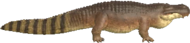
Carnívoro
Purussaurus
Predador semiaquático que embosca e transporta presas com o bote.
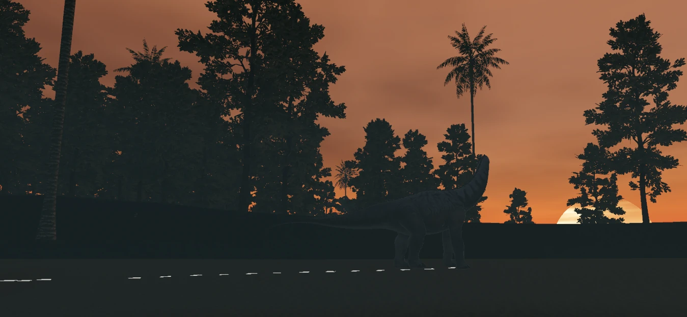
Sobrevivência pré-histórica para Windows
Escolha sua espécie, cresça de filhote a adulto e encontre seu lugar em um ecossistema onde cada margem, trilha e disputa por alimento conta.
Seleção do jogo
Escolha entre os dinossauros, crocodiliformes e répteis marinhos disponíveis para jogar.

Carnívoro
Predador semiaquático que embosca e transporta presas com o bote.
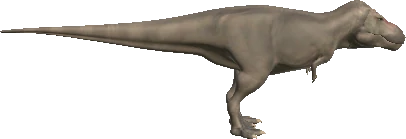
Carnívoro
Grande predador terrestre com mordida potente.
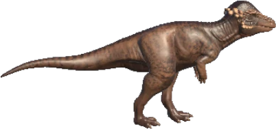
Herbívoro
Herbívoro de crânio abaulado que se defende com cabeçadas.
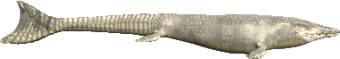
Carnívoro
Predador marinho. A água é seu habitat de caça e sobrevivência.
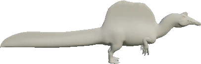
Carnívoro
Predador semiaquático com uma vela dorsal marcante.
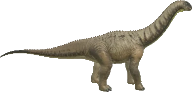
Herbívoro
Saurópode de pescoço longo e grande porte.

Carnívoro
Predador terrestre reconhecível pelos chifres acima dos olhos.
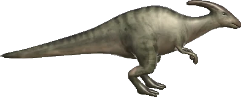
Herbívoro
Herbívoro de grande crista tubular.
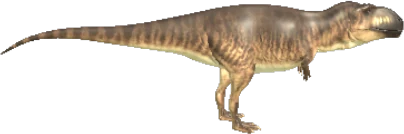
Carnívoro
Grande carnívoro terrestre de mandíbulas alongadas.
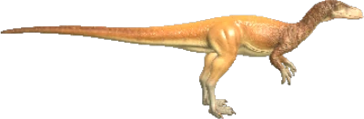
Carnívoro
Terópode bípede de corpo esguio.
Diário de desenvolvimento
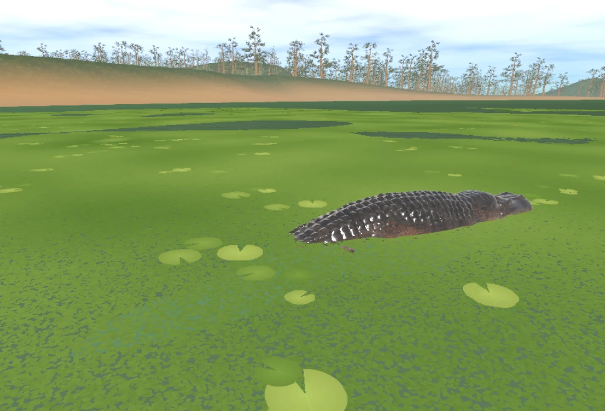
A experiência de cada criatura influencia seu estilo de caça. O Purussaurus ganha novas regras de captura e a água passa a revelar mais pistas.
Um saurópode herbívoro e um predador terrestre ampliam a seleção e oferecem duas formas de explorar e sobreviver no mapa.
O jogo
Explore sozinho ou com outros jogadores. Aprenda onde buscar água e alimento, acompanhe a mudança do clima e cuide da stamina para sobreviver.
Desenvolvimento independente
Primitive Earth é um jogo de sobrevivência pré-histórica desenvolvido por um brasileiro. O projeto é feito por uma pessoa, da criação do mundo e das criaturas aos sistemas de sobrevivência e à preparação das builds.
O beta ajuda a descobrir o que funciona na prática. As atualizações registram as mudanças conforme o jogo evolui, e a comunidade pode acompanhar o desenvolvimento pelo Discord e pelo YouTube.
Beta fechado
Receba novidades do desenvolvimento e avisos sobre oportunidades de teste por e-mail.